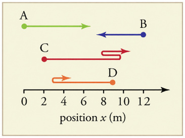

BR01 and BR02 are applied. Thirteen other opening-chapter corrections have been applied and are listed afterward. The full-book backport is not complete. Published 1.0 is unchanged.
BR01 — Kilogram: update the old definition to past tense
Apply three upstream past-tense corrections; describe the current definition as in effect since May 2019; correct approving body to CGPM. Preserve paragraph structure and all author MathML.
it is currently defined → it was previously definedreplicas of the standard kilogram → replicas of the previously defined kilogrammasses can be ultimately traced → masses could be ultimately tracedInternational Committee for Weights and Measures → General Conference on Weights and Measuresa proposed re-definition of kilogram was approved → a re-definition of the kilogram was approvedThis proposal (effective May 2019) re-defines the kilogram by precisely fixing → This definition, in effect since May 2019, fixes
Before BR01
The SI unit for mass is the kilogram (abbreviated kg); it is currently defined to be the mass of a platinum-iridium cylinder kept with the old meter standard at the International Bureau of Weights and Measures near Paris. Exact replicas of the standard kilogram are also kept at the United States’ National Institute of Standards and Technology, or NIST, located in Gaithersburg, Maryland outside of Washington D.C., and at other locations around the world. The determination of all other masses can be ultimately traced to a comparison with the standard mass. At the November 2018 meeting of the International Committee for Weights and Measures, a proposed re-definition of kilogram was approved. This proposal (effective May 2019) re-defines the kilogram by precisely fixing the numerical value of Planck's constant () to be exactly . This is similar to definition of the meter by fixing the speed of light (), and we will see the importance of this re-definition in a later unit on quantum mechanics.Applied for 1.1
The SI unit for mass is the kilogram (abbreviated kg); it was previously defined to be the mass of a platinum-iridium cylinder kept with the old meter standard at the International Bureau of Weights and Measures near Paris. Exact replicas of the previously defined kilogram are also kept at the United States’ National Institute of Standards and Technology, or NIST, located in Gaithersburg, Maryland outside of Washington D.C., and at other locations around the world. The determination of all other masses could be ultimately traced to a comparison with the standard mass. At the November 2018 meeting of the General Conference on Weights and Measures, a re-definition of the kilogram was approved. This definition, in effect since May 2019, fixes the numerical value of Planck's constant () to be exactly . This is similar to definition of the meter by fixing the speed of light (), and we will see the importance of this re-definition in a later unit on quantum mechanics.BR02 — Displacement exercise figure: correct the axis without moving path C
Applied the position axis label and matching alt text while retaining all original paths and answers. Path C still ends at 11 m; the upstream endpoint change is not adopted.
Local: C ends at 11 m

Pinned upstream: C ends at 10 m
Local calculation: |10−2| + |8−10| + |11−8| = 13 m; displacement = 11−2 = +9 m. The pinned upstream solution still gives these values even though its new drawing ends at 10 m. That drawing would instead give 12 m and +8 m.
Applied: corrected the local axis label to “position x (m)” and matching alt text, retaining the original paths and answers.
Applied corrections
BK02-01 — Physics: An Introduction
Remove duplicated word in existing cell-membrane caption; preserve image and credit.
- of the the structure → of the structure
Updated development section
BK02-02 — Physical Quantities and Units
Restore missing space after second.
- second</term>(abbreviated → second</term> (abbreviated
Updated development section
BK02-03 — Physical Quantities and Units
Use upstream qualification; four quantities do not cover all seven SI base quantities.
- all physical quantities can be expressed → most physical quantities can be expressed
Updated development section
BK02-04 — Physical Quantities and Units
Backport atomic-size estimate 10^-9 m to 10^-10 m, preserving the locally expanded order-of-magnitude explanation.
- atomic diameter: 10^-9 m → atomic diameter: 10^-10 m
Updated development section
BK02-05 — Time, Velocity, and Speed
Correct alt text to match existing graph: 12 km/h for 0.25 h reaches 3 km. Existing artwork visually verified.
- 6 kilometers → 3 kilometers
Updated development section
BK02-06 — Time, Velocity, and Speed
Correct the odometer question: it measures accumulated distance, not position.
- measure position or displacement → measure distance traveled or displacement
Updated development section
BK02-07 — Acceleration
Speeding up depends on acceleration relative to velocity, not the velocity change; retain other author wording.
- same sign as the change in velocity → same sign as the velocity
- opposite sign of the change in velocity → opposite sign as the velocity
Updated development section
BK02-08 — Falling Objects
Rock reaches its apex at 13.0/9.80 = 1.3265... s; retain all problem data and equations.
Updated development section
BK02-09 — Projectile Motion
Correct astronaut name without restoring removed advanced projectile discussion.
- Alan Shepherd → Alan Shepard
Updated development section
BK02-10 — Motion Equations for Constant Acceleration in One Dimension
Use corrected upstream graph labels: displacement Delta x and average velocity v-bar. Curve and physical relationship unchanged. Existing local filename and figure/media IDs retained.
- Displacement x; average velocity v → Displacement Delta x; average velocity v-bar
Updated development section
BK03-01 — Introduction to Dynamics: Newton’s Laws of Motion
Correct Newton’s name in the figure caption too; the earlier batch corrected the body paragraph.
- Issac Newton → Isaac Newton
Updated development section
BK03-02 — Newton's Second Law of Motion: Force and Acceleration
Backport the upstream location qualification for the discussion of changing weight.
- leaves Earth. → leaves Earth’s surface.
Updated development section
BK03-03 — Newton's Second Law of Motion: Force and Acceleration
Qualify g as the acceleration magnitude in the scalar weight derivation, preserving all equations.
- that the acceleration of an object due to gravity → that the magnitude of the acceleration of an object due to gravity
Updated development section